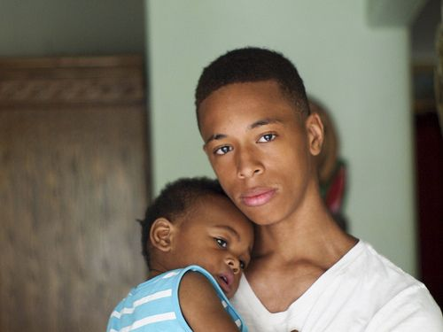

Prosecuting Attorney's Office
It is essential to our mission that we create and maintain an office that is diverse and inclusive.
It is essential to our mission that we create and maintain an office that is diverse and inclusive.
The mission of the King County Prosecuting Attorney’s Office is to do justice. We exercise the power given to us by the people with fairness and humility. We serve our diverse community, support victims and families, and hold individuals accountable. We develop innovative and collaborative solutions for King County and the State of Washington.
We value diversity and strive to hire a workforce that reflects the community that we serve. It is essential to our mission that we create and maintain an office that is diverse and inclusive. We encourage you to discussing our values:
Deputy Prosecuting Attorneys are primarily hired through our law school summer Rule 9 program. Due to budget cuts over the past few years, the PAO does very little lateral hiring of bar certified attorneys. Nonetheless, candidates are welcome to forward their materials to Heidi Parkington for consideration if openings do occur.
The King County Prosecuting Attorney's Office has regular need to hire term-limited deputy assistants (contract lawyers). Contracts are initially for six months and are often extended for up to one year. Potential work assignments include handling gross misdemeanor cases in the District Court Unit, handling gross misdemeanor and felony cases in the Juvenile Unit, assisting with drug and mainstream felony filings, and covering felony calendars. These positions provide excellent courtroom experience, especially for new or inexperienced lawyers. Deputy Assistants are interviewed throughout the year and considered for regular openings when they become available. Over the past few years, the PAO has hired many of our contract lawyers into regular positions as openings become available.
Interested applicants may send a resume and cover letter to be kept on file for consideration in the event that we have a need to hire a deputy assistant attorney. Candidates must be bar qualified in the State of Washington. Application materials should be sent via e-mail to Heidi Parkington, Human Resources Director.
It is the policy of this office to promote from within our office as much as possible. For that reason, most openings that are available to the general public are entry-level positions. Entry-level job functions vary depending on the position assigned. Responsibilities include:
Promotional opportunities come up regularly for staff and we have a career progression ladder within our office.
Occasionally, we open higher level positions to the outside public. These are usually legal secretary and victim advocate vacancies.
All recruiting announcements will be posted on the King County jobs page.
Administrative staff members are represented by Teamsters Local 117 (external link).
Applicants who are interested in being considered for any of these positions may send a resume and cover letter to be kept on file for consideration in the event that we have a need to hire an entry-level candidate. Application materials should be sent via e-mail to Heidi Parkington, Human Resources Director
Persons with disabilities may request special accommodations from the King County Prosecuting Attorney's Office in order to participate in a selection process or to perform work once hired. Requests for accommodations should be made as soon as possible. This may be done by a written letter or an appropriate alternative format to our offices, or phone 206-477-1205.
Where to Apply
Mail a cover letter and resume to:
Who May Apply
Undergraduate students are eligible to apply. Students must make at least a six-month commitment.
This is a 10-week program for students during the summer between their first and second years of law school. If you are enrolled in Seattle University School of Law's evening program and are interested in an Extern position, but unable to work full-time, please contact Lebryna Tamaela for other options. Externs must be able to work full time, 8:30 to 4:30 p.m. for a minimum of ten weeks.
Purpose
The externship program is designed to give students a meaningful experience and exposure to our law practice. It is an excellent way to become acquainted with the King County Prosecuting Attorney's Office, pursue an interest in criminal law, and determine whether trial practice is a future career path. The extern positions are unpaid, but many law schools offer credit for externship programs.
Description of Program
Externs will be assigned to one or more deputies and assigned to a unit in the Criminal Division. More information about the Criminal Division.
Duties may include witness contact, coordination and interviews; legal research and writing; and general preparation and support during trial.
Applications for Summer 2019
The Prosecutor's Office anticipates hiring five interns for summer 2019. This is a 13-week program for students during the summer between their second and third year of law school. The legal intern program is permitted under Rule 9-A limited license to practice in Washington State. Interns are paid $800.00 per week with no benefits.
Requirements
Applicant Procedure
Because of limited funds, out-of-state, on-campus recruiting is not anticipated and no funds are available to support candidates' trips to Seattle. We will conduct Skype interviews for selected students.
Out-of-state candidates should submit a cover letter, resume, list of three references, an unofficial transcript and a 5-10 page writing sample by August 3, 2018 for summer 2019. Materials must be sent in the listed order as a single document file (.pdf or Word format), by e-mail to: Lebryna Tamaela
Resumes will be reviewed and candidates will be notified if they are selected for an interview.
We anticipate that interviews will be completed by September 28, 2018.
On-campus interviews will be conducted at the University of Washington and Seattle University. Students from these schools should contact the career placement office regarding interview dates. We interview Gonzaga students in Seattle on a date selected by their career services center.
The King County Prosecuting Attorney's Office has regular need to hire term-limited deputy assistants (contract lawyers). Contracts are initially for six months and are often extended for up to one year. Potential work assignments include handling gross misdemeanor cases in the District Court Unit, handling gross misdemeanor and felony cases in the Juvenile Unit, assisting with drug and mainstream felony filings, and covering felony calendars. These positions provide excellent courtroom experience, especially for new or inexperienced lawyers. Deputy Assistants are interviewed throughout the year and considered for regular openings when they become available. Over the past few years, the PAO has hired many of our contract lawyers into regular positions as openings become available.
Interested applicants may send a resume and cover letter to be kept on file for consideration in the event that we have a need to hire a deputy assistant attorney. Candidates must be bar qualified in the State of Washington. Application materials should be sent via e-mail to Heidi Parkington, Human Resources Director at Heidi.Parkington@kingcounty.gov.
Thank you for your interest in the Volunteer Program within the Domestic Violence Unit of the King County Prosecuting Attorney’s Office. We are currently recruiting volunteers for summer internships to assist our domestic violence legal advocates. If you are interested in volunteering with the Domestic Violence Unit, please feel free to contact the Volunteer Coordinator, Sandra Shanahan at Sandra.Shanahan@kingcounty.gov. For a copy of the application, click here.
REQUIREMENTS: Our summer internship program seeks highly motivated students who have an interest in providing legal advocacy to survivors of domestic violence. Our summer internship needs are for full time placements throughout the summer, Monday through Friday 8:30 a.m. - 4:30 p.m. Site based training will be provided. Interns are needed in the King County Courthouse in Seattle and the Norm Maleng Regional Justice Center in Kent.
If you are interested in a volunteer Domestic Violence Advocacy position, please see the information about our Training Program and our Frequently Asked Questions page.
Reasonable Accommodation
Persons with disabilities may request special accommodations from the King County Prosecuting Attorney's Office in order to participate in a selection process or to perform work once hired. Requests for accommodations should be made as soon as possible. This may be done by a written letter or an appropriate alternative format to our offices, or phone 206-477-1205.
A pre-filing juvenile diversion program designed to keep youth out of the criminal justice system.
The Youth 180 Workshop is a true partnership between the King County Prosecuting Attorney’s Office (PAO) and the community it serves. This workshop offering provided by the nonprofit Choose 180 is a pre-filing juvenile diversion program designed to keep youth out of the criminal justice system.
The PAO first partnered to launch the Youth 180 Workshop in 2011 as a pilot project after King County Prosecuting Attorney Dan Satterberg asked community leaders for help to reach youth in a new way.
In July of 2011, the PAO, in partnership with the nonprofit organization Choose 180, launched its first half-day workshop, where youth were invited to participate and hear from volunteer speakers who had dealt with some of the same issues and struggles the youth were dealing with and who made their own commitment to Choose 180 and change the direction of their life.
Today, the 180 Program diverts approximately 400 youth each year from the criminal justice system. Saturday half-day workshops are held each month at Seattle University's School of Law. The university loans the space to Choose 180 and hosts the Youth 180 Workshops free of charge. Each of these 400 youth represents a host of costs that are avoided. For example, when 400 youth cannot be located or fail to respond to the diversion letter, each is arrested, charged with a crime, booked into the Youth Service Center, and assigned a public defender to represent them in juvenile court.
Kids’ Court educates and supports children and their parents and caretakers as they participate in the criminal justice process.
Kids’ Court is an experiential and activity-based program held at least six times a year on Saturdays in a courtroom at the King County Courthouse in Seattle or the Norm Maleng Regional Justice Center in Kent, Washington. Through a standardized curriculum, participants engage in discussions with a judge and prosecutor. Utilizing role-plays, question and answer sessions and fun games, the program increases children’s knowledge of courtroom personnel and procedures. The afternoon session focuses on enhancing self-confidence and introduces stress reduction techniques.
Kids’ Court is designed for children ages 4-12. As the day progresses children in the group learn:
It is the mission of the Victim Assistance Unit to provide thoughtful, nonjudgmental outreach and response to the needs of crime victims and witnesses and to ensure the protection of their rights and interests.
The King County Prosecutor's Office Victim Assistance Unit (VAU) automatically notifies victims and survivors of victims named in the charging language when felony charges are filed.
The goals of the VIctim Assistance Unit are:
Victims have the right to be reimbursed for losses caused directly in the commission of a crime.
Criminal restitution is money ordered by the court and paid by the offender. It is ordered at the time the offender is sentenced. Monies are paid to the Superior Court Clerk and then disbursed to the victim.
For assistance in this process, or if you would like to be informed of case status or notice of hearings, click below to see addtional contact information
If you are in immediate danger, call 911.
If you are controlling or have a controlling partner, don't ignore these behaviors. They are learned behaviors that one person uses to intimidate and manipulate. They are destructive and dangerous. Every year, thousands of women are seriously hurt or killed by their husbands or partners.
If the abuse continues without outside help, the abusing partner may risk being arrested, going to jail, or losing the relationship.
Children get hurt when they see their parents being yelled at, pushed or hit. They may feel scared and ashamed or think they caused the problem. Children grow up learning that it's okay to hurt other people or let other people hurt them. A third of all children who see their mothers beaten develop emotional problems. Boys who see their fathers beat their mothers are ten times more likely to be abusive in their adult intimate relationships.
Seek the support of caring people. They may be your friends, family members, neighbors or staff members of the agencies listed above. Talk to them in a private, safe place.
If your partner is abusive, have a plan to protect yourself and your children in case you need to leave quickly.
If you are abusive, be honest with yourself, think of the consequences, and get help.
Domestic violence occurs among all kinds of people. It cuts across cultural, economic and social boundaries. It can involve: